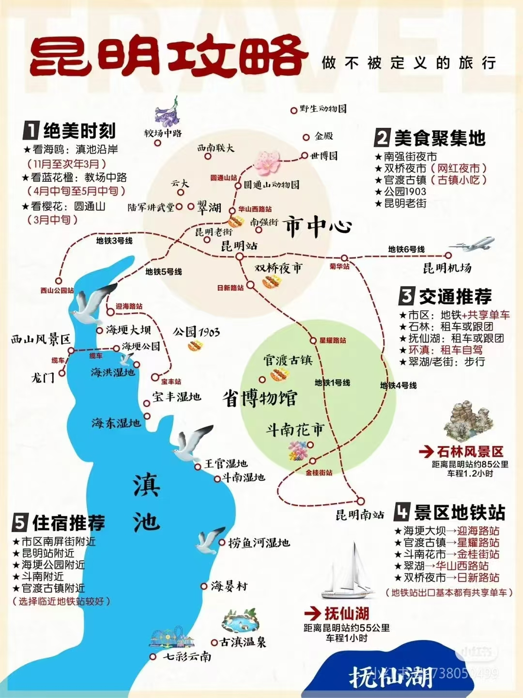

昆明旅行日记
昆明，别名春城，是云南省省会，一个四季如春的城市~回来到现在还在戒断反应
昆明市地处云贵高原，总体地势由北向南呈阶梯状逐渐降低，盆地与高原错落分布。境内属亚热带高原山地季风气候，气候温和（超级无敌舒服的天气），夏无酷暑，冬无严寒。

基本信息
- 语言：普通话和云南方言
- 时区：北京时间（但天黑略晚）
- 支付：微信支付、支付宝
- 气候：四季如春，天气舒适
昆明，别名春城，是云南省省会，一个四季如春的城市~回来到现在还在戒断反应
昆明市地处云贵高原，总体地势由北向南呈阶梯状逐渐降低，盆地与高原错落分布。境内属亚热带高原山地季风气候，气候温和（超级无敌舒服的天气），夏无酷暑，冬无严寒。

第一天我们游览了文化巷、文林街、西南联大旧址和翠湖公园。
很多有意思的小店铺，很有生活气息。小林看到很多想吃的东西但吃不了，看到很美丽的耳环但没耳洞；小郑不语只是埋头一味狂走（摊手）
在昆明师范大学里的旧址，突然之间多了几分神圣感。理科的小林小郑还是很认真学习了这一段历史（敬礼）（鞠躬）
翠湖是一个巨大的能量场，在湖边静坐二十分钟发上一会呆整个人都会变好。阳光、绿叶、亮晶晶的湖面、风、鸭鸭鹅鹅、亭台楼阁...
第二天参观了云南省博物馆和斗南花市。
本来只是准备来走马观花以下，结果溜达着溜达着发现了"大理国"的字眼。越看越眼熟越看越眼熟，拍脑袋一想，这不是天龙八部嘛！
还欣赏到了大名鼎鼎的《张胜温画卷》-复刻版（说的北有清明上河图，南有张胜温画卷）。
亚洲最大的鲜切花交易市场，花花世界让人眼花缭乱。我们的战绩：买了一堆鲜花和盆栽！
第三天主要游览滇池周边：海埂大坝、海埂公园和海洪湿地公园。
早上的海埂大坝，没有海鸥，但有满天的白云。小林看上了水上飞艇（举手）
海洪湿地有长长一条堤岸观赏滇池和西山（以及日出日落）。我们早早在下午四点来到海洪湿地等日落，但不幸被大风吹成鹌鹑...
最后一天再次游览翠湖，并参观了嘉华鲜花饼旗舰店。
终于在中午前到了翠湖，舒服~ 蓝天白云，游船，虫儿飞和退休生活。
排了很久很久久的队，罪魁祸首大概是前面买走108个鲜花饼的阿姨和五盒云腿小饼的老板叔叔...
昆明美食体验：
小林于出发前一天凌晨突发急性肠胃炎。（字少事大）
小郑达成了三秒内学会骑电动车、坐共享单人电动车后座的成就。小林达成了载人穿街走巷的大突破。
恭喜郑女士连续两年五四都经历了狂奔赶车。